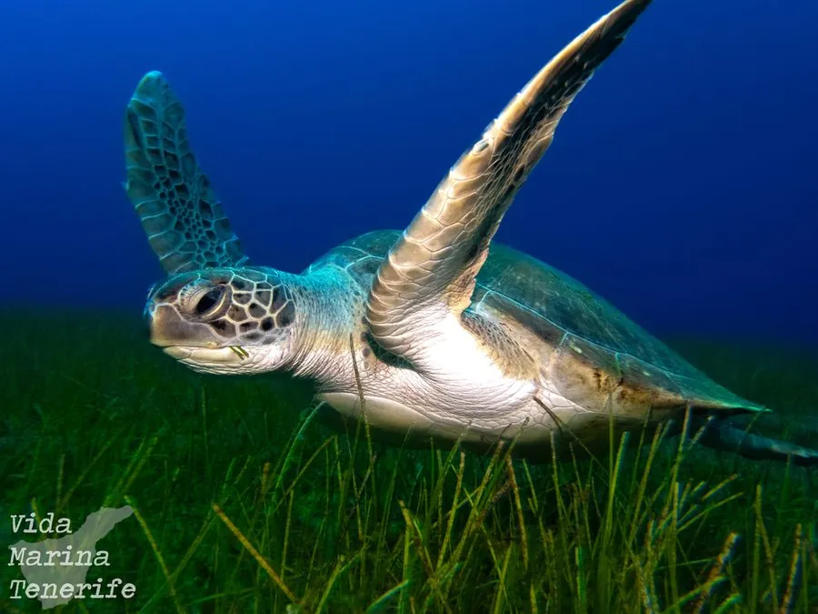

爬行动物 · 动物界
绿海龟 Chelonia mydas

全球分布的大型海龟，因脂肪呈绿色而得名，成年后以海草和藻类为食，是濒危的海洋旗舰物种，也是洄游距离最长的海龟之一。
- 分类
- 门脊索动物门纲爬行纲目龟鳖目科海龟科属海龟属
- 栖息环境
- 热带与亚热带的海草床、珊瑚礁和近岸浅海
- 地理分布
- 全球热带与亚热带海域，中国南海、东海及台湾、海南沿海
- 保护级别
- IUCN 濒危（EN）；中国国家一级保护动物；CITES 附录 I
物种志
绿海龟体长 80–150 厘米，体重 110–200 千克，背甲呈椭圆形、盾片平铺，颜色从橄榄绿到棕褐色不等；它四肢特化成桨状，头小吻短，体内脂肪因富集绿色色素而呈淡绿色，因而得名“绿海龟”。
它是分布最广的海龟之一，栖息于热带和亚热带海域，幼龟生活在远洋漂流海藻中，成年后迁到近岸的海草床和珊瑚礁，以海草和藻类为主食，是少数成年后转为植食的海龟。雌龟每 2–4 年产卵一次，每窝约 100–200 枚，孵化期 45–70 天；幼龟出壳后依靠地磁和光感辨向入海。由于沙滩开发、渔网误捕、塑料垃圾和盗猎龟卵，其种群持续下降，被列为濒危物种；中国将其列为国家一级保护动物。
形态与习性
- 食性成体以海草、藻类为主，幼体杂食
- 体长背甲长 80–150 cm
- 体重约 110–200 kg
- 寿命约 60–80 年
- 繁殖卵生，每窝 100–200 枚，孵化期 45–70 天
- 活动节律昼行性，可进行长距离洄游
- 天敌幼龟易被海鸟、鲨鱼和大型鱼类捕食
趣味知识
- 绿海龟的脂肪因长期吃海草而呈绿色，这是它名字的由来。
- 幼龟出壳后会朝海面最亮的方向爬行，城市灯光常使它们迷失方向。
- 绿海龟能利用地磁场导航，洄游数千公里回到出生沙滩产卵。